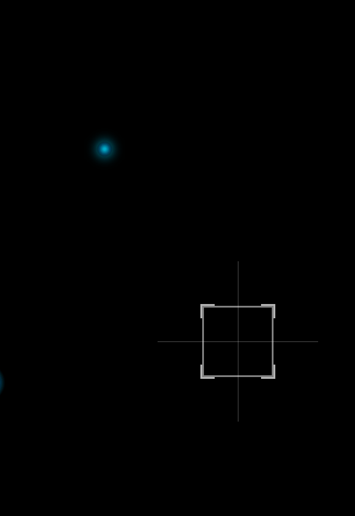
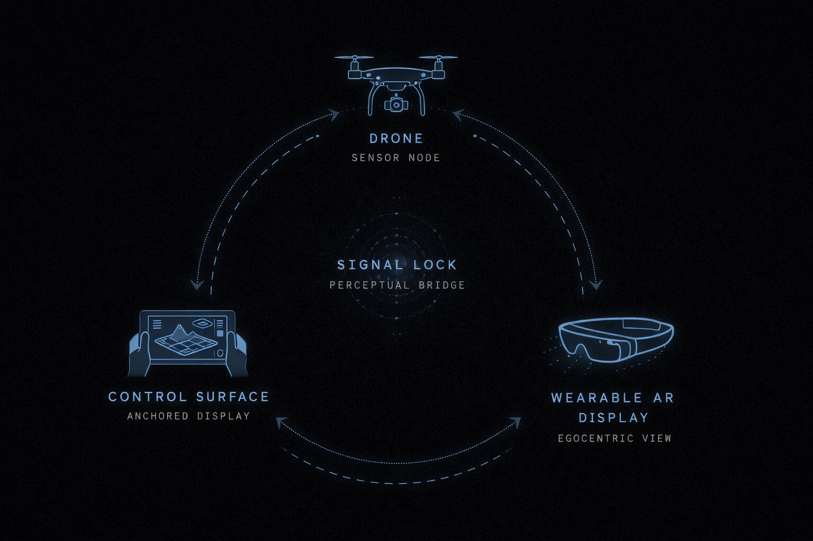

Signal
Lock
Signal Lock translates a single system across two conditions:
Control Surface: complexity expands through spatial distribution Wearable AR: complexity compresses into targeting, timing, and attention
Rather than redesigning the interface, the system preserves its logic across scale. On the monitor, trajectories and command states spread outward. In wearable view, those same relationships condense into reticle stability and selective cues.

Gaze Detection

The same system logic operates across both surfaces -- a Control Surface for spatial command and a Wearable AR display for situated operation. Signal Lock is the perceptual bridge between them.


AR systems resolve targeting and action sequencing through perceptual anchoring and behavioral hierarchy rather than interface expansion.
- Gaze anchoring replaces selection with stabilization -- the system meets attention rather than demanding it.
- Hierarchy governs perception through timing and motion rather than density.
- Scale reshapes perceptual organization without modifying system behavior.
At egocentric scale, the same logic resolves complexity through perceptual anchoring -- same model, different perceptual contract.
Designed for attention precision, where perceptual signals, hierarchy, and feedback must operate within a tightly bounded visual field.
Optimized for perceptual distribution, allowing system complexity, signal relationships, and behavioral states to externalize across expanded visual space.